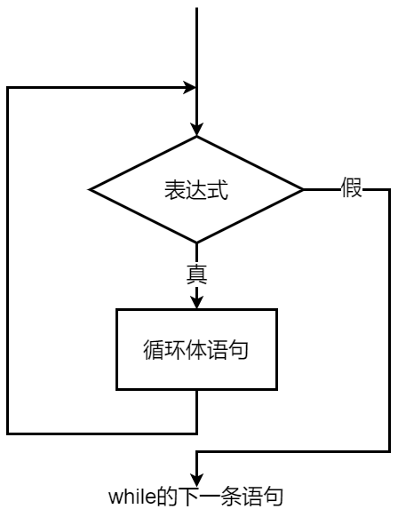

程序设计基础 · 第4次课 · 第1课时
从连续脉搏记录输入到格雷戈里公式，理解“次数未知但条件明确”的循环
如果我们不知道要输入多少条数据，程序还能重复处理吗？
循环的基本概念：把重复操作交给程序。
循环次数未知时，由条件决定是否继续。
while (条件) { ... }
while 的语法与执行过程eps 与浮点精度的关系假设程序连续读取脉搏值，使用 -1 表示本次录入结束。
只要 pulse >= 0，就处理当前记录。
遇到 -1 时，不再作为脉搏数据处理。
| 问题 | 在本例中的答案 |
|---|---|
| 什么操作重复？ | 读取并处理一条脉搏记录 |
| 什么时候继续？ | pulse >= 0 |
| 什么时候停止？ | pulse < 0 |
| 每轮什么会变化？ | 下一次输入的 pulse |
| 进入循环前要准备什么？ | 先读取第一条数据 |
💡 课堂互动：同桌两人尝试用此 Prompt 提问 AI，对比自己的五问设计并验证极端边界。
while 的执行路径pulsepulse >= 0scanf("%d", &pulse);
while (pulse >= 0) {
/* 处理当前脉搏值 */
sum = sum + pulse;
count++;
scanf("%d", &pulse);
}
while 语句while (表达式) {
循环体语句;
}while 循环
使用格雷戈里公式求 \(\pi\) 的近似值，要求精确到最后一项的绝对值小于给定精度
eps：
\[\frac{\pi}{4}=1-\frac{1}{3}+\frac{1}{5}-\frac{1}{7}+\ldots\]
\(\frac{\pi}{4}=1-\frac{1}{3}+\frac{1}{5}-\frac{1}{7}+\cdots\)
item 依次为 1, -1/3, 1/5, ...
符号交替，分母每次加2。
当 fabs(item) < eps 时停止。
fabs(item) < eps
当前项的绝对值已经小于给定精度。
fabs(item) >= eps
还没有达到停止要求，就继续累加。
= 是有依据的。
flag = 1;
denominator = 1;
item = 1.0;
pi = 0;
while (fabs(item) >= eps) {
pi = pi + item;
flag = -flag;
denominator = denominator + 2;
item = flag * 1.0 / denominator;
}
pi = pi * 4;
重点然僧：每轮循环之后，item 必须向停止条件靠近。
| 轮次 | flag |
denominator |
item |
动作 |
|---|---|---|---|---|
| 初始 | 1 | 1 | 1.0 | 准备第1项 |
| 第1轮后 | -1 | 3 | -1/3 | 准备下一项 |
| 第2轮后 | 1 | 5 | 1/5 | 准备下一项 |
| 第3轮后 | -1 | 7 | -1/7 | 准备下一项 |
循环体中最关键的不是“累加”，而是更新下一轮的状态。
= 能不能去掉？while (fabs(item) >= eps)对应结束条件：fabs(item) < eps
while (fabs(item) > eps)对应结束条件：fabs(item) <= eps
先定义边界，再写条件。
item == eps 呢？进一步追问：浮点数真的会精确等于我们写下来的十进制小数吗？
#include <stdio.h>
int main(void)
{
double x = 0.1 + 0.2;
printf("%.17f\n", x);
printf("%.17f\n", 0.3);
if (x == 0.3)
printf("equal\n");
else
printf("not equal\n");
}0.30000000000000004
0.29999999999999999
not equal13₁₀ = 1101₂
在一定范围内可以精确表示。
0.5₁₀ = 0.1₂
可以有限表示。
0.1₁₀ ≈ 0.000110011...
只能近似表示。
fabs(item) >= eps 仍然合理？fabs(item) >= eps
判断当前项是否还没有达到精度阈值。
x == 0.3
判断两个浮点计算结果是否完全相等，通常要谨慎。
eps 不是普通数字，而是“允许误差/精度阈值”。
💡 课堂互动：提问 AI 并记录：二进制中哪些常见十进制小数（如 0.1）是无限循环的？
本演示工具用于直观剖析 C 语言中浮点数运算的二进制近似现象与循环控制精度：
0.1、0.2、0.3
及 0.1 + 0.2 的 17 位高精度输出。
while (fabs(item) >= eps) 的迭代过程，实时观察项值
item 与 \(\pi\) 近似值的收敛。
从键盘输入一批学生的成绩，计算平均成绩，并统计不及格学生的人数。
（注：输入负数时标志数据输入结束）
for 到 while：问题变在哪里？for (i = 1; i <= n; i++) {
scanf("%lf", &score);
total += score;
}scanf("%lf", &score);
while (score >= 0) {
total += score;
scanf("%lf", &score);
}| 设计问题 | 答案 |
|---|---|
| 重复操作 | 处理一个成绩：累计、计数、判断是否不及格 |
| 循环条件 | score >= 0 |
| 结束标志 | 输入负数 |
| 需要维护的状态 | total、num、fail |
num = 0;
total = 0;
fail = 0;
scanf("%lf", &score);
while (score >= 0) {
total += score;
num++;
if (score < 60)
fail++;
scanf("%lf", &score);
}
if (num > 0) {
printf("Average: %.2f\n", total / num);
printf("Number of failures: %d\n", fail);
}
注意：判断不及格用的是当前成绩 score，不是累计总分
total。
💡 课堂互动：观察 AI 提示的死循环和垃圾值读入现象，并在 IDE 中验证单步执行。
次数已知，常用 for。
如格里高里公式，由 fabs(item) 与 eps 控制。
如连续成绩输入，由哨兵值决定结束。